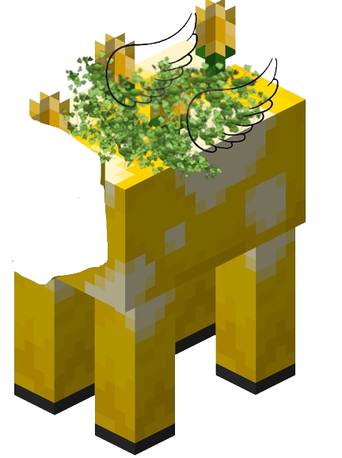

Home
minigame
stuff
RNG(random name generator)

Backstory
so basically rng comes from cowpedia and is headless if u look at his neck he'll eat ur family and btw its not moobloom i swear
i made a drawing on paper but idk how to put it on computer cuz it doesnt have a camera and he can grow plants on his back like
flowers and stuff and the spots are orange kinda like sunset and like its really cool on paper and also lore is his parents like
threw him out so he flew to earth cuz he has wings and stuff so its like rlly depressing but hes fine now and he is not depressed.
Diet
eats miso soup his favorite kind of miso soup is White Miso soup
RNG's shelter